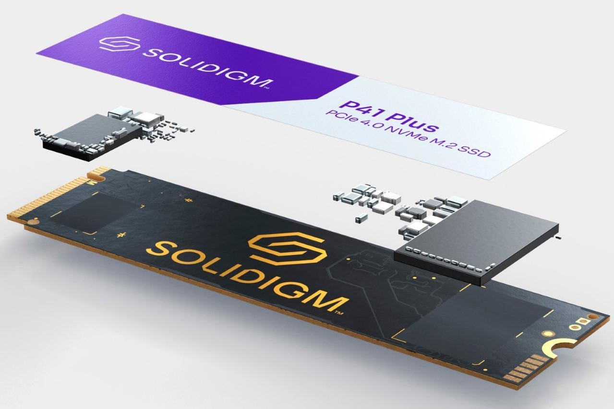

My Portfolio

Solidigm Technology - Product Development Intern
- Received Op-x Recognition Award for outstanding execution in developing a tool used to study SSD access patterns.
- Designed proof-of-concepts and firmware policies for next-gen solid-state storage drives.
- Created Python scripts used to determine data-driven power and performance targets for future drives.
- Developed internal tool to simulate power consumption of storage drives under various workloads.
- Collected performance data to validate marketing material for the Solidigm P41 Plus SSD.
BattleBots Team Riptide - Electronics/Embedded Systems Lead
- Drafted electrical diagrams, designed custom sensor PCBs using Altium, and developed brushless motor control software (C++) under the open-source VESC project.
- Lead Team Riptide as the chief of electronics and embedded systems during the 2021 and 2022 seasons of Discovery Channel’s TV Show BattleBots.
- Placed within the Top 8 of all heavyweight combat robots worldwide, awarded “Rookie of the Year” for unprecedented success in first ever competitive season.


Texas A&M Robomasters - Software Project Manager
- Led development of FreeRTOS implementation and control systems on STM32 platform across 10 of Texas A&M’s robots at the DJI Robomaster World Championships.
- Implemented custom UART communication protocol between NVIDIA Jetson and STM32-based microcontroller.
- Designed patrol, target selection, and combat algorithms for fully-autonomous Sentry robot.
- Managed team's finances, recruiting, and task delegation.